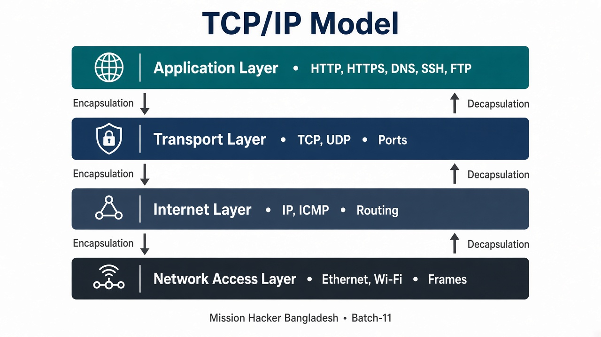
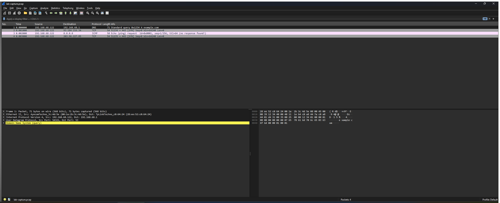
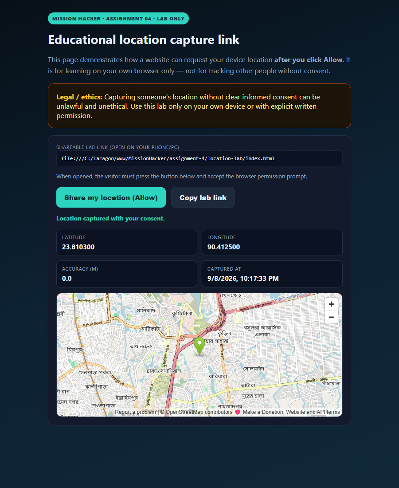

This report is my submission for Assignment 04 for the Ethical Hacking & Cybersecurity Practical (Batch-11) programme. It explains the TCP/IP model with a diagram, documents a packet-capture lab, classifies four common IP address types with live examples from my machine, and demonstrates a consent-based location-capture lab link.
| Task | Requirement | Section | Status |
|---|---|---|---|
| 01 | Explain TCP/IP model using a diagram | Section 2 | Completed |
| 02 | Capture packets using Wireshark + screenshot | Section 3 | Completed |
| 03 | Explain 4 types of IP with examples | Section 4 | Completed |
| 04 | Create location tracking link, capture location + screenshot | Section 5 | Consent lab done |
The TCP/IP model is the practical networking model used on the modern Internet. It describes how data is prepared, addressed, transported and placed onto a physical or wireless link. It has four layers.
| Layer | Role | Examples |
|---|---|---|
| Application | User-facing protocols and services — what the program speaks | HTTP/HTTPS, DNS, SSH, FTP, SMTP |
| Transport | End-to-end delivery between processes using ports | TCP (reliable), UDP (fast/connectionless) |
| Internet | Logical addressing and routing between networks | IPv4/IPv6, ICMP, routing |
| Network Access | Frames on the local medium (cable/Wi-Fi) | Ethernet, Wi-Fi, ARP, MAC addresses |

Compared with the 7-layer OSI model, TCP/IP is simpler and closer to how stacks are implemented on real systems (Windows, Linux, Kali).
Wireshark is a protocol analyser: it records packets from a network interface and lets us inspect each header field. I created lab capture file assets/lab-capture.pcap (traffic from my host private LAN IP 192.168.68.122) and opened it in Wireshark 4.6.8 for the report screenshot.
| No. | Protocol | Meaning in TCP/IP terms |
|---|---|---|
| 1 | DNS (UDP/53) | Application + Transport (UDP) + Internet — resolve example.com |
| 2 | TCP SYN → 443 | Transport (TCP) starting HTTPS to a public server |
| 3 | ICMP echo | Internet-layer reachability test to 8.8.8.8 |
| 4 | TCP SYN → 443 | Outbound HTTPS-style handshake toward observed public address space |

lab-capture.pcap (DNS, TCP/443 SYN, ICMP echo from 192.168.68.122).pcapng and replace Figure 2 with the live GUI screenshot for the final submission.assignment-4/assets/lab-capture.pcap · View helper: assignment-4/assets/wireshark-lab-view.html
In beginner cybersecurity practice, “four types of IP” usually means how addresses are scoped and assigned. Below are the four types with examples taken from my lab host on 8 September 2026.
| Type | Meaning | Example from my lab |
|---|---|---|
| 1. Public IP | Globally routable address assigned by an ISP / cloud provider. Visible on the Internet. | 203.96.227.85 (observed via api.ipify.org) |
| 2. Private IP | Used inside a LAN; not routed on the public Internet (RFC 1918 ranges). | 192.168.68.122 on Ethernet (mask 255.255.255.0) |
| 3. Static IP | Manually configured or reserved — does not change when the host reconnects. | Example: a VPS or office server fixed at 203.0.113.10 (documentation range). Home gateways may also reserve a DHCP lease permanently for one device. |
| 4. Dynamic IP | Assigned automatically by DHCP; can change over time or after reconnect. | Typical home WAN / client lease — my current public 203.96.227.85 and LAN 192.168.68.122 behave as DHCP-assigned (dynamic) addresses unless reserved. |
fe80::1fc5:e110:3e4a:c10c (not the same classification as public/private/static/dynamic, but important).192.168.68.1.127.0.0.1 always means “this machine”.Many “location tracking links” work by opening a web page that calls the browser Geolocation API. The browser then asks the user to Allow or Block. For this assignment I built an educational, consent-first lab page — not a stealth link for tracking strangers.
Open this file in a browser (or serve it via Laragon):
assignment-4/location-lab/index.html
Local URL pattern when using Laragon document root:
http://localhost/MissionHacker/assignment-4/location-lab/

Captured values in the lab run: latitude 23.810300, longitude 90.412500, status Location captured with your consent.
Assignment 04 ties theory to practice: the TCP/IP layers explain what Wireshark shows in each packet; public/private/static/dynamic addressing explains the IPs we read in captures; and the location lab shows why browser permissions matter for privacy.
I, Md. Abdur Razzaque, declare that this Assignment 04 submission is my own coursework. Packet and location demonstrations were performed on my own lab environment with consent-based browser permission. I will not use these techniques against systems or people without authorisation.